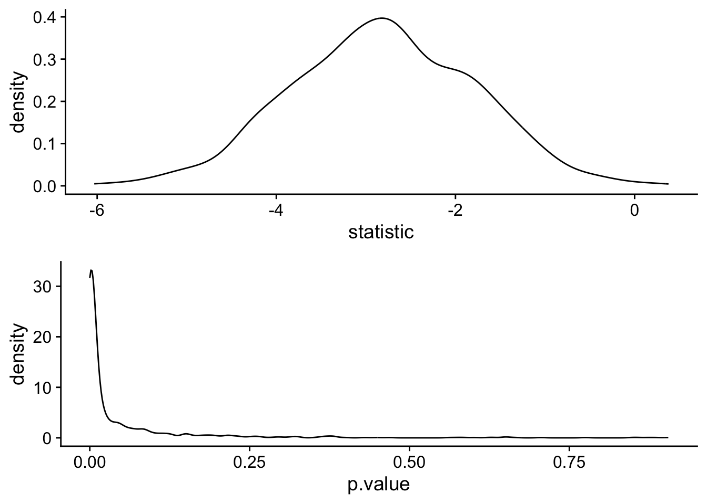
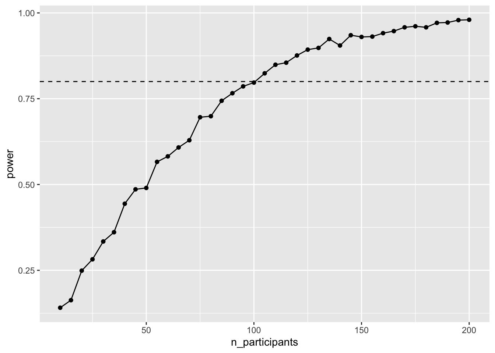
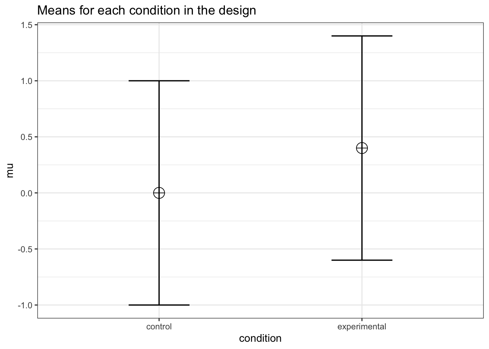

pacman::p_load(tidyverse, cowplot, infer, glue)31 Simulating Power!!!
Note that the pwr package in R is limited to what it can do. It can only perform basic power analyses. For more complex power calculations, like those tied to more complex models including factorial and repeated measures ANOVA, you will need to download gpower a free stand-alone power software or you have to find other packages in R or build a Monte-Carlo simulation. In this walkthrough I’ll build intuitions on how to do the latter. To do this I’ll be leveraging an assumed and a known:
- I am assuming that you are somewhat comfortable with the notion of simulating data, given your experiences in the past few weeks. We are going to be leveraging some of the tools and ideas that you used when building your sampling distributions using simulated data (e.g., bootstrapping).
- I am leveraging a known consequence of the definition of power. Namely a designs power is the probability that it will correctly reject the null hypothesis. Restated, its the probability that you will get a significant result (p < \(\alpha\)) given that there is a true difference or relationship in your data.
Together, (1) and (2) mean that given a certain set of parameters, including mean differences, variability, sample size and \(\alpha\) if I simulate collecting data and running a test 100 times, and 80 of those times my test yields a significant result, then my power is .80.
Let’s revisit our previous example to build some intuitions.
31.1 The general procedure
Each of the examples in this walkthrough are going to follow a common procedure:
- identify your hypothesized result.
- run a series of simulations, randomizing data given parameters consistent with (1).
- test each simulation given your criterion of significance (typically \(\alpha\)).
31.2 Revisiting an example using a t-test
I think a good place to start is revisiting our examples from a few weeks back. The the walkthrough on Power we ran an a priori power analysis provided some combination of:
an effect size
a given sample size
a desired power
and a performed test including significance level.
We noted that to perform a power analysis we needed to know values for 3 out of 4, where the goal of the analysis is to calculate the 4th. For example, tin the typical power analysis we want to know the number of participants that we will need for our study given a known effect size, d=.4 and a desired power-level, typically .8. In the case that we are running a independent (two) sample t-test with an \(\alpha\) of .05, we can run this analysis algorithmically by calling the following in R:
library(pwr)
pwr.t.test(n = NULL, d = .4, power = .8, sig.level = 0.05,
type = c("two"), alternative = c("two.sided"))
Two-sample t test power calculation
n = 99.08032
d = 0.4
sig.level = 0.05
power = 0.8
alternative = two.sided
NOTE: n is number in *each* groupIn this case, our output indicates that we will need approximately 100 participants per group.
31.3 Simulated power analysis, an example, part 1
As an alternative, we might also elect to run our power analysis using Monte Carlo simulation methods. In this simple case we start by creating simulated samples given our effect size parameter. For example, starting with an effect size of d=.40 we can create 2 groups, a control group with a standard distribution (M = 0, SD = 1) and an experimental group with a mean of 0.4, and SD = 1
We then run a independent samples t-test comparing the two groups
t.test(x = control_group, y = experimental_group, paired = F, var.equal = T)
Two Sample t-test
data: control_group and experimental_group
t = -2.4205, df = 198, p-value = 0.0164
alternative hypothesis: true difference in means is not equal to 0
95 percent confidence interval:
-0.6387013 -0.0652081
sample estimates:
mean of x mean of y
-0.01475916 0.33719553 Now lets simulate this process 1000 times. First, we build a tibble that simulates 1000 control and experimental samples of size n = 100. Each row in the tibble sample_simulations contains a list containing the control_sample, a list containing the experimental_sample and their respective means.
library(tidyverse)
library(infer)
library(broom)
sample_simulations <- tibble(simulation = 1:1000) %>%
mutate(control_sample = map(simulation,~rnorm(n = 100,mean = 0,sd = 1)),
experimental_sample = map(simulation,~rnorm(n = 100,mean = 0.4,sd = 1)),
mean_control = map_dbl(control_sample, ~mean(.)),
mean_experimental = map_dbl(experimental_sample, ~mean(.))
) We then follow this up by running a simulation t.test() for each row in the sample_simulations. The tibble t_test_simulations, contains the tidy() output for each t.test()
library(broom)
t_test_simulations <- tibble()
for (test_sim in 1:1000){
control <- sample_simulations$control_sample[test_sim] %>% unlist()
experimental <- sample_simulations$experimental_sample[test_sim] %>% unlist()
t_test_results <- t.test(control,experimental,paired=F,var.equal=T)
t_test_simulations <- bind_rows(t_test_simulations,tidy(t_test_results))
}Let’s take a look at the distribution of p.values from our simulations:
library(cowplot)
t_statistic_plot <- ggplot(t_test_simulations, aes(x=statistic)) +
geom_density() + theme_cowplot()
p_value_plot <- ggplot(t_test_simulations, aes(x=p.value)) +
geom_density() + theme_cowplot()
cowplot::plot_grid(t_statistic_plot, p_value_plot,nrow = 2)
Finally, we can ask ourselves what percentage of our obtained p-values are p < .05.
mean(t_test_simulations$p.value<.05)[1] 0.781This is the simulated power, and matches the power obtained using pwr.t.test.
31.4 Simulated power analysis, an example, part 2
We can reconfigure our simulations to ask a more practical question: how many participants do we need to reach our desired power. In this case, I’m going to start with a realistic minimum number of participants, 10 per group, and work my way up by 5s to a realistic maximum of 200.
participants <- seq(10,200,5)
simulations <- 1:1000Now let’s redo the simulation above, but this time running 1000 simulations per n_participants. First we create an empty tibble crossing n_participants and n_simulations.
We then run the sample simulations, running 1000 simulations for each sample size of n_participants
We then run a t.test for each simulation:
t_test_simulations <- tibble()
for (test_sim in 1:nrow(sample_simulations)){
control <- sample_simulations$control_sample[test_sim] %>% unlist()
experimental <- sample_simulations$experimental_sample[test_sim] %>% unlist()
t_test_results <- t.test(control,experimental,paired=F,var.equal=T)
t_test_simulations <- bind_rows(t_test_simulations,tidy(t_test_results))
}Finally we combine our two tables…
simulation_outcomes <- dplyr::bind_cols(sample_simulations, t_test_simulations)generate a summary table containing the proportion of tests that yielded a significant result…
and plot, here the horizontal line represents desired power of .80. Essentially we a looking for the first point that is above this line, which is at about 100 participants.
ggplot(power_table, aes(x = n_participants, y = power)) +
geom_point() +
geom_line() +
geom_hline(yintercept = .8, lty = "dashed")
32 No one man should have all that Superpower
The two examples above were to provide a gist of how to conduct a simple power analysis using simulation methods. Moving forward, we’ll ramp up the complexity of our designs by including ANOVA. One thing that is apparent is that creating the simulated datasets as above may become a little cumbersome. Fortunately for us, there are packages in R that do the heavy lifting in this process for us.
A relatively new, but powerful (haha) package is Superpower (haha) developed by Daniel Lakens and Aaron Caldwell. A paper outlining this package can be found here. Let’s load in the package:
pacman::p_load(Superpower)The first step is to consider the design and predicted effects of your anticipated data set. For example in our general example above we have a between-groups design with 2 factors. We had an estimated effect size of Cohen’s d = 0.4. We elected to run a t-test given this design, although FWIW we could have also run an ANOVA.
We can input this information into Superpower using ANOVA_design():
designis the combination of number of type of factor (within = “w”, between = “b”) and number of levels. Here we have 1 between factor with 2 levels (“control”, “experimental”), hence “2b”n= number of total participantsmu= our hypothesized meanssd= our hypothesized standard deviationslabelnames= the labels for our conditionsplot= do you want to see a plot of your hypothetical data
library(Superpower)
my_ANOVA_design <-ANOVA_design(design = "2b",
n = 100,
mu =c(0, .4),
sd = 1,
labelnames =c("condition","control", "experimental"),
plot = TRUE)
my_ANOVA_designThe design is specified as: 2b
Summary of means (mu) and standard deviations (SD)
mu SD condition
1 0.0 1 control
2 0.4 1 experimental
Correlation Matrix
control experimental
control 1 0
experimental 0 1From here you would take your design_result and plug it into the ANOVA_power, including (but not limited to) the following arguments:
alpha_level: p valuecorrection: in the case that you have a repeated measures design, you can run your analysis assuming that you correct for potential sphericity violationsp_adjust: assuming you anticipate multiple comparisons, run your power analysis accounting for familywise error adjustmentsnsims: how many simulations to runseed: equivalent toset.seed()for reproducibilityverbose: do you want it to print the output?
ANOVA_power(design_result = my_ANOVA_design,
alpha_level = .05,
correction = "none",
p_adjust = "none",
nsims = 1000,
seed = 2020,
verbose = F)Power and Effect sizes for ANOVA tests
power effect_size
anova_condition 82 0.04254
Power and Effect sizes for pairwise comparisons (t-tests)
power effect_size
p_condition_control_condition_experimental 82 0.3998The output provides estimates of power based upon the provided parameters. For our purposes, the pairwise t-test, we would refer to the outputs labelled pairwise
33 Moving forward
For now, this is where I leave you. The goals here were to provide you with a conceptual basis for how we can run power analyses using simulations as well as an introductory example. In future walkthroughs, I will show an example of how to conduct a power analysis given each of the designs that we will encounter. For those that want to get a head start I would check out these two wonderful resources from the authors of Superpower
33.1 Additional resources
The Superpower Github repository (https://github.com/arcaldwell49/Superpower) provides a more comprehensive walkthrough of
Superpowerusing slightly more complex examples than provided here.Power Analysis with Superpower (https://aaroncaldwell.us/SuperpowerBook/): is a fully comprehensive web-based text that goes into great detail with how to conduct power analyses for complex ANOVA designs.